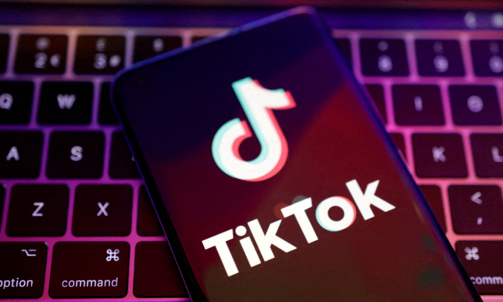
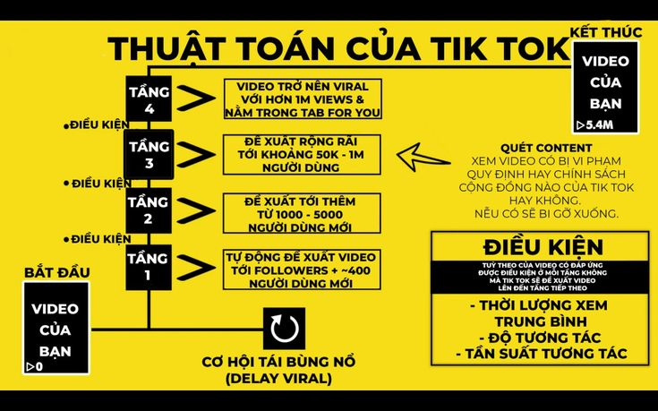

Diệp Anh , Chủ nhật, 28/4/2024
Thuật toán TikTok có nhiều ưu thế so với sản phẩm của Meta và Google, khiến nó thường xuyên rơi vào tầm ngắm của giới công nghệ và quan chức Mỹ.
Thuật toán đề xuất nội dung của TikTok tiếp tục trở thành tâm điểm sau khi chính quyền Mỹ thông qua đạo luật buộc ByteDance bán ứng dụng trong vòng 9 tháng hoặc bị cấm hoạt động ở Mỹ.
Reuters dẫn lời 4 nguồn tin cho biết ByteDance sẽ không thoái vốn TikTok cho bất kỳ công ty nào khác và sẵn sàng đóng cửa ứng dụng trong trường hợp xấu nhất. Họ nhấn mạnh hãng Trung Quốc chấp nhận làm điều này vì không muốn từ bỏ thuật toán cốt lõi - "công thức bí mật" tạo nên thành công của TikTok mà không mạng xã hội nào có được.
Thuật toán và thiết kế ứng dụng
Giới chuyên gia và cựu nhân viên TikTok cho biết thành công toàn cầu của ứng dụng không chỉ bắt nguồn từ thuật toán, mà còn liên quan tới cách nó phối hợp với định dạng video ngắn trên nền tảng.
Trước khi TikTok xuất hiện, nhiều người tin việc kết nối các mối quan hệ của người dùng là bí quyết tạo nên thành công cho mạng xã hội, như Facebook và Instagram đã làm.
Tuy nhiên, TikTok cho thấy việc vận hành dựa trên hiểu biết về sở thích và mối quan tâm của người dùng mang đến ưu thế lớn hơn nhiều. Thay vì tạo thuật toán dựa trên mối quan hệ xã hội như Facebook, lãnh đạo TikTok, trong đó có CEO Shou Zi Chew, xây dựng thuật toán dựa trên "những tín hiệu quan tâm".
"Nhiều mạng xã hội đã phát triển thuật toán dựa trên sở thích của người dùng, nhưng TikTok tối đa hóa hiệu quả của nó nhờ định dạng video ngắn. Hệ thống đề xuất của họ làm nên sự khác biệt ở thiết kế và nội dung", Catalina Goanta, giảng viên tại Đại học Utrecht ở Hà Lan, nhận xét. Trong đó, thuật toán TikTok có khả năng theo dõi những thay đổi nhỏ trong sở thích người dùng một thời gian dài, thậm chí có khả năng xác định họ muốn xem gì vào thời điểm nhất định trong ngày.
Thu thập dữ liệu nhanh chóng
Jason Fung, cựu lãnh đạo bộ phận game của TikTok, cho biết định dạng video ngắn giúp ứng dụng này tìm hiểu sở thích người dùng nhanh hơn nhiều so với các đối thủ.
"Chúng tôi có thể tập hợp dữ liệu về sở thích nhanh hơn YouTube - nền tảng có độ dài video trung bình gần 10 phút. Hãy tưởng tượng khả năng thu thập dữ liệu vài giây một lần, so với gần 10 phút mỗi lần", ông nói.
TikTok khởi đầu là ứng dụng cho thiết bị di động, giúp giành được ưu thế trước các nền tảng phải tìm cách chuyển đổi giao diện từ máy tính sang smartphone.
Việc tham gia thị trường video ngắn từ sớm cũng mang đến cho TikTok nhiều lợi thế của người tiên phong. Instagram tung ra Reels năm 2020, còn Shorts của YouTube là năm 2021. Cả hai đều đi sau TikTok vài năm về kinh nghiệm phát triển sản phẩm và cơ sở dữ liệu người dùng.
Cho phép khám phá
TikTok cũng thường xuyên đề xuất nội dung nằm ngoài sở thích người dùng, điều mà ban lãnh đạo công ty tin sẽ đóng vai trò thiết yếu với trải nghiệm của mỗi người.
Theo báo cáo được các nhà nghiên cứu Mỹ và Đức công bố tháng trước, dựa trên dữ liệu của 347 người dùng và 5 bot tự động trên TikTok, thuật toán của nền tảng khai thác sở thích người dùng chỉ trong 30-50% video đề xuất.
"Phát hiện này cho thấy thuật toán TikTok đề xuất lượng lớn video mang tính khám phá, nhằm tìm hiểu rõ hơn nhu cầu người dùng hoặc tối đa hóa khả năng giữ chân họ thông qua những video thú vị không liên quan", các nhà nghiên cứu cho hay.
Gộp người dùng vào nhóm
Ari Lightman, giáo sự tại Đại học Carnegie Mellon ở Mỹ, chỉ ra một trong những chiến thuật hiệu quả của TikTok là khuyến khích người dùng tập trung vào các nhóm công khai thông qua hashtag. Phương thức này giúp họ tìm hiểu rõ hơn về hành vi, sở thích và tư tưởng của người sử dụng.
Lightman nhận định các tập đoàn công nghệ hàng đầu của Mỹ có khả năng sao chép và thay thế vị trí TikTok nếu ứng dụng này bị cấm hoàn toàn, nhưng sẽ gặp nhiều thách thức nếu muốn tái hiện văn hóa người dùng TikTok từng xây dựng.
Lợi thế của Trung Quốc
Thuật toán đề xuất của TikTok được phát triển dựa trên ứng dụng Douyin ra mắt tại Trung Quốc năm 2016. ByteDance nhiều lần nói TikTok và Douyin là ứng dụng độc lập, nhưng một nguồn tin am hiểu vấn đề cho biết thuật toán của cả hai có nhiều nét tương đồng.
AI của Douyin được đẩy mạnh nhờ nguồn lao động giá rẻ tại Trung Quốc, cho phép công ty tuyển lượng lớn nhân lực để dán nhãn nội dung và người dùng trên nền tảng. "Trong giai đoạn 2018-2019, Douyin tìm cách dán nhãn từng người. Họ đánh dấu từng video một cách thủ công, sau đó đánh dấu người dùng dựa trên video đã xem. Phương thức này cũng được áp dụng cho TikTok", Yikai Li, cựu giám đốc tại ByteDance, tiết lộ.
Tuyển người dán nhãn dữ liệu hiện là phương thức phổ biến ở các doanh nghiệp AI, nhưng ByteDance là một trong những công ty tiên phong trong lĩnh vực này.
"Thống kê và sắp xếp dữ liệu dán nhãn như vậy tốn nhiều công sức. Các công ty Trung Quốc có lợi thế do nguồn nhân lực giá rẻ và đông đảo. Chi phí cho hoạt động này ở Trung Quốc thấp hơn nhiều so với những doanh nghiệp Bắc Mỹ", Li cho hay.